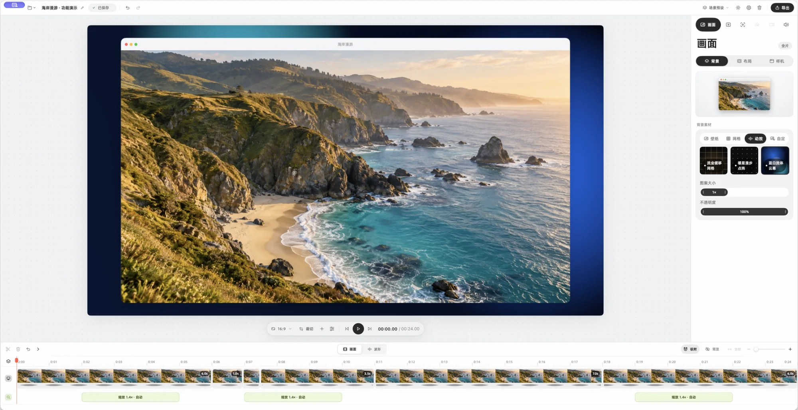
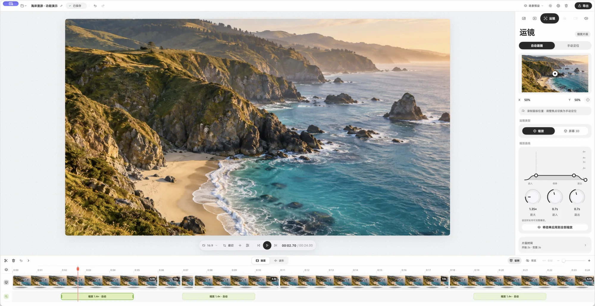

TAKE 01 · 00:00:12
- 显示器
- 窗口
- 区域
- 设备
录整块屏幕。摄像头、麦克风和系统声音可以一起录。
TAKE 02 · 剪辑

剪辑，不用学。
分割、裁剪、重排、变速，剪掉的部分随时可以还原。缩略图和波形一键切换，片段边界自动吸附。
- S在播放头分割
- B刀片工具
- QW删掉播放头之前 / 之后
- JKL倒放 · 暂停 · 播放
- ⌃⌥M录制时留标记，剪辑时直接跳回
TAKE 03 · 运镜
运镜自然。
镜头自动跟着光标推近、拉远，也可以手动定一个焦点。屏幕 3D 给画面加上倾斜、透视和聚焦虚化。每一次缩放都是时间线上的一段，拖一拖就能改时长和曲线。

TAKE 04 · 画面
画面，一眼就好看。
比例、裁切、留白、圆角、阴影、背景和样机外框，还有贴图、柔化与突出。调好的样子存成场景预设，下次一键套用。
背景
留白
圆角
光标和摄像头也一样：光标样式、点击反馈、静止时自动隐藏；摄像头的位置、形状和出场动画。
TAKE 05 · 导出
导出之后，项目还在。
- 格式
- MP4 · M4A
- 分辨率
- 原始 · 1080p · 1440p · 4K
- 帧率
- 30 · 60 FPS
预览和导出用的是同一个渲染器，看到什么就导出什么。成片导出后，项目仍可随时打开接着改。
TAKE 06 · 本地
录的东西，只在你的 Mac 上。
不用注册账号，不上传，不含广告、分析 SDK 或追踪。项目、素材和鼠标轨迹都存在本机的项目文件里，删掉项目就一并删掉。
CUT · 收工
下一条，用 Tapir 录。
还没上架。上架后这个按钮会直接打开 App Store，现在可以先从 GitHub 下载。
- macOS 14 及以上
- Apple Silicon
- 简体中文 · English
- 开源 · MIT